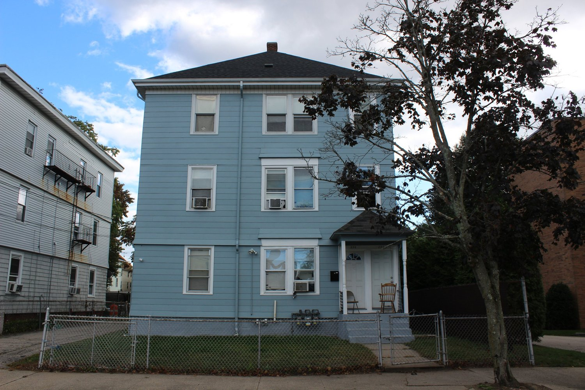
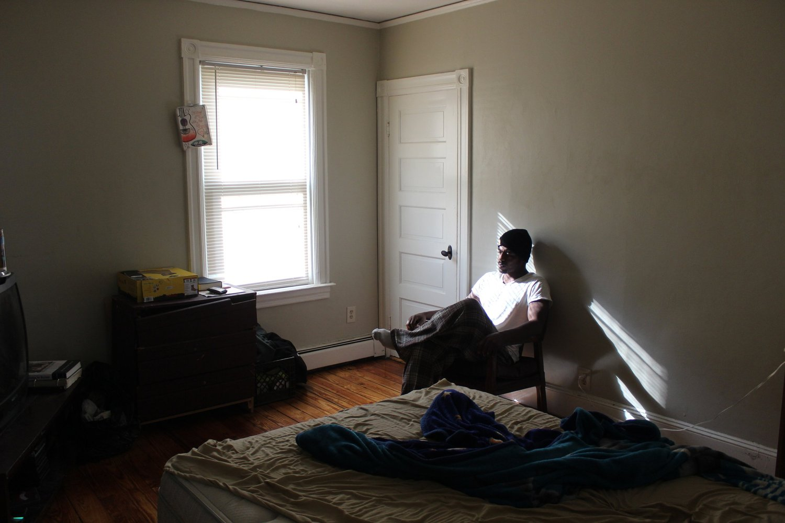

Men’s Transitional Housing


OpenDoors operates two Transitional Houses for men coming out of prison, both of which are certified through the National Association of Recovery Residences. Both programs provide case management, peer recovery coaching, and employment assistance in a structured, supportive, and sober environment.
The 9 Yards House focuses on people coming out of prison on parole or probation, and provides a high level of support and assistance as people transition back into society. The house is part of the state-wide Recovery Housing network and tenants receive subsidized rent through this program. People can access the house by calling 942-STOP, though beds are generally filled with a waitlist. OpenDoors prioritizes people coming out of prison on parole for this program.
Our Phase II House provides longer term transitional housing for people that have some higher degree of independence. This is a self-pay house, requiring people to pay a monthly rent of $450-$600. The program focuses on people released from prison within the last six months, as well as referrals from the Federal Courts and Federal probation system.